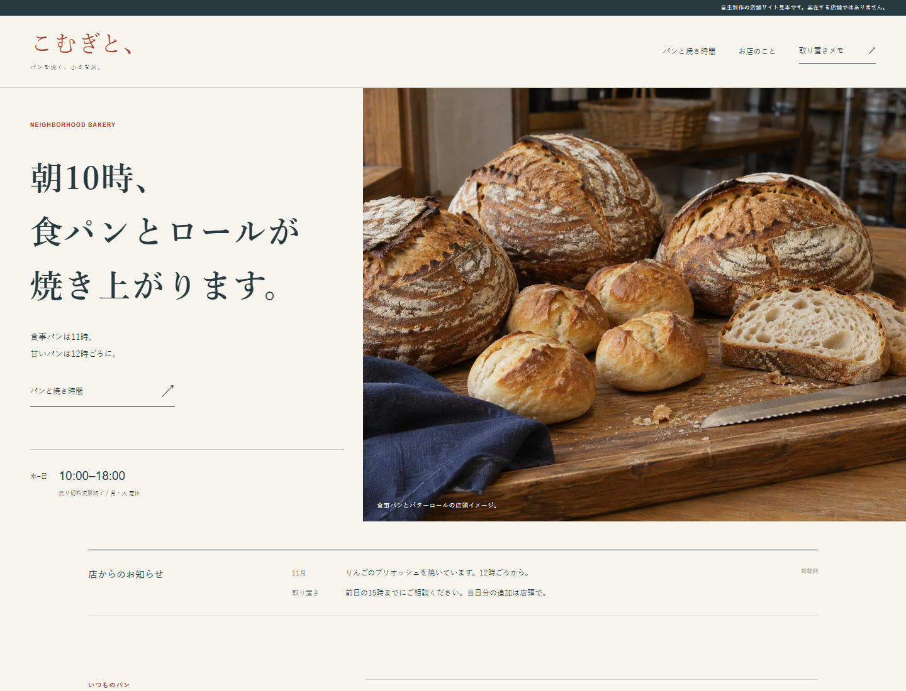
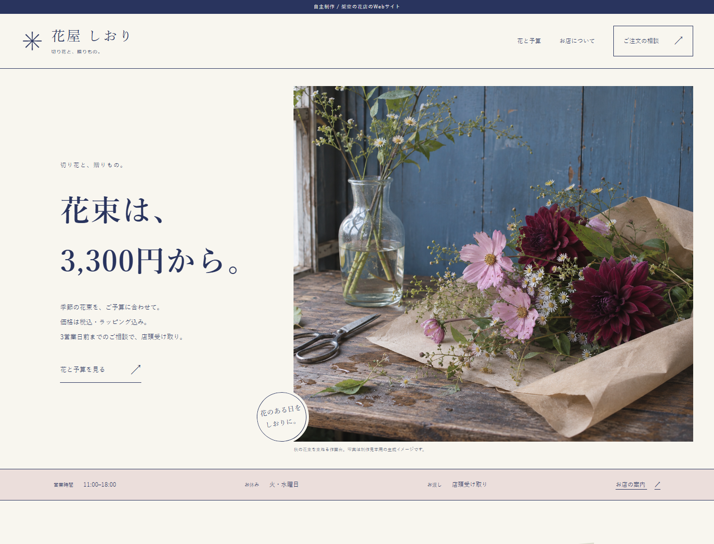
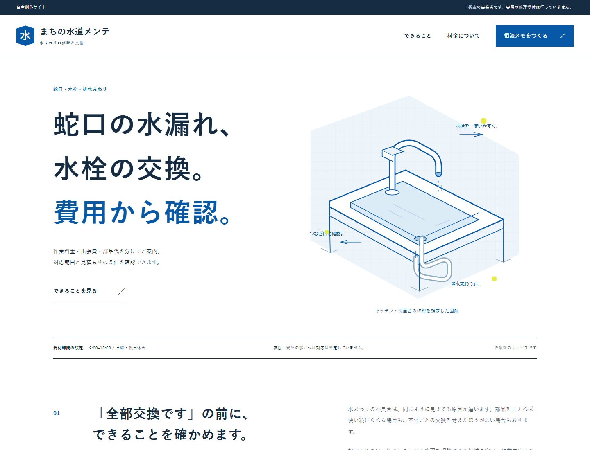

SELECTED SELF-INITIATED PROJECTS
お店の仕事に合わせて、
サイトをつくる。
商品を選ぶ、来店の準備をする、作業を相談する。
お客様が知りたい順番から考えた、業種別の制作例です。


制作のご相談
店舗・小規模事業者向けのWordPressサイトを制作します。商品の案内や料金、営業情報を整理し、スマートフォンから読みやすく仕上げます。
- 参考価格
- 5ページ 55,000円（税込）から
- 制作期間
- 原稿・画像と仕様の確定後、初稿まで約2週間
- 含むもの
- 構成・デザイン・WordPressテーマ実装・スマホ対応・修正2回
- 別途相談
- サーバー・ドメイン・有料ライセンス・予約や決済・メール配信・運用保守
掲載サイトは架空事業の自主制作です。各サイトの注文・相談フォームはデモで、実際の受付は行いません。